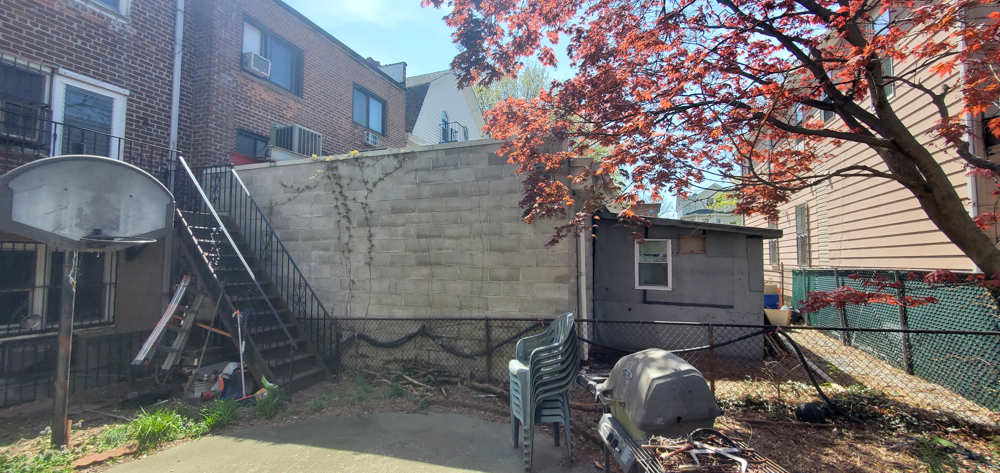
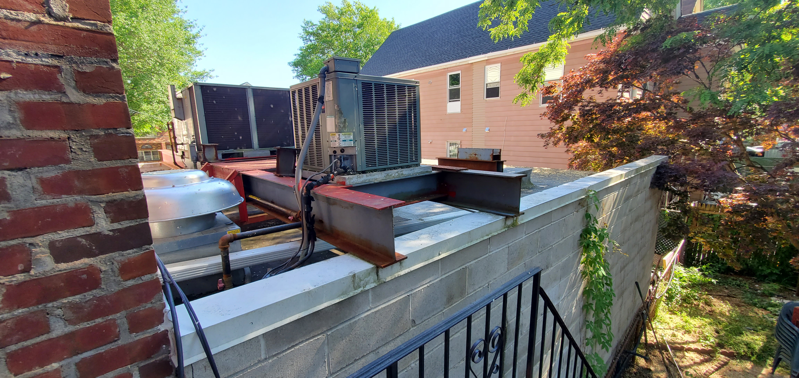
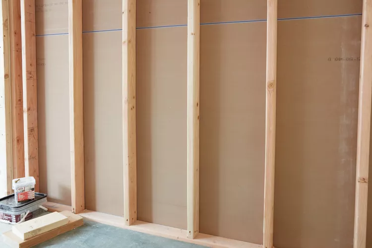
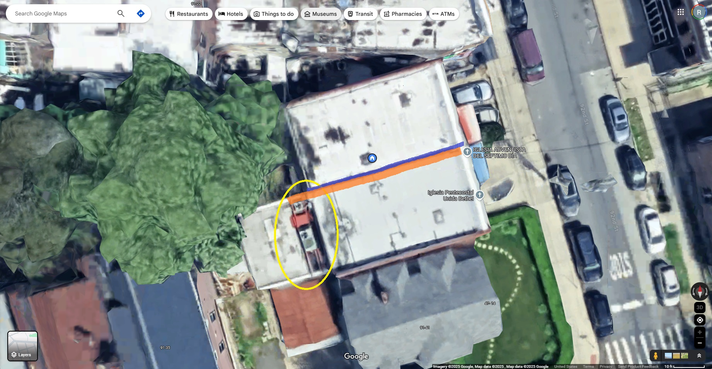
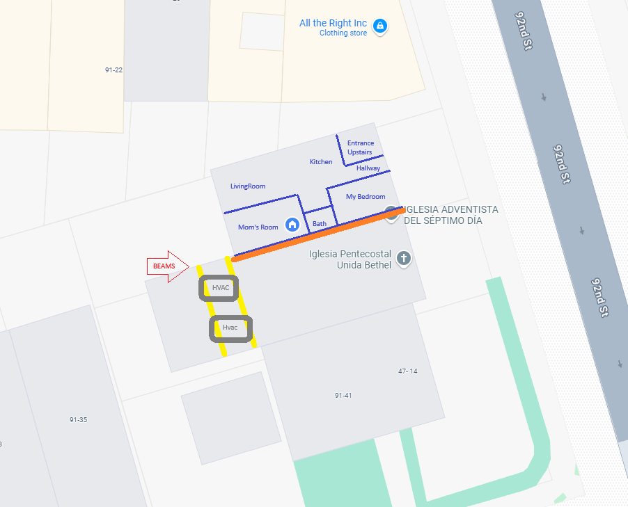
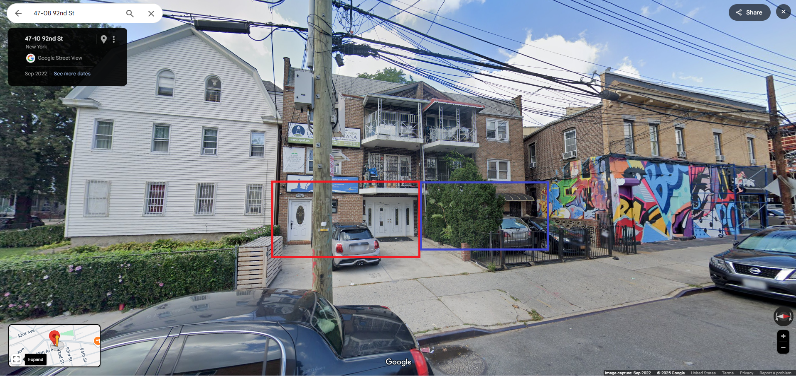
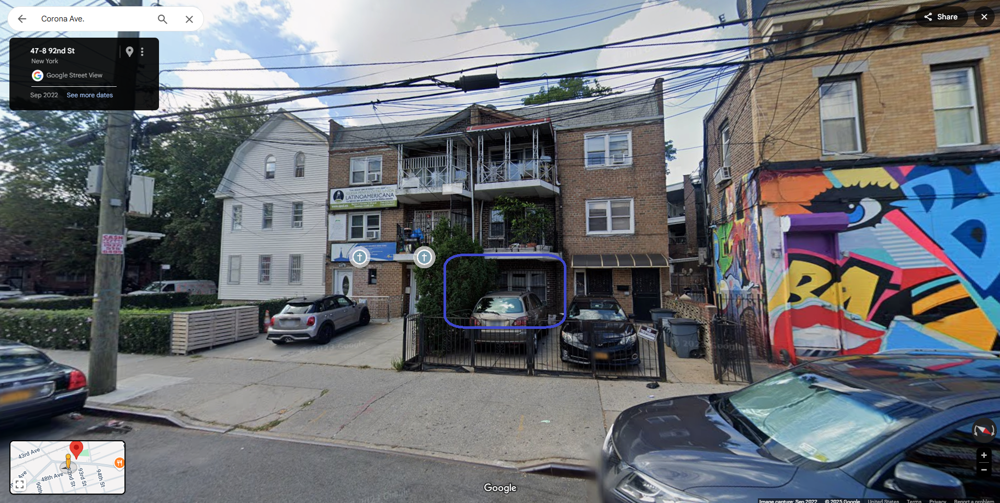
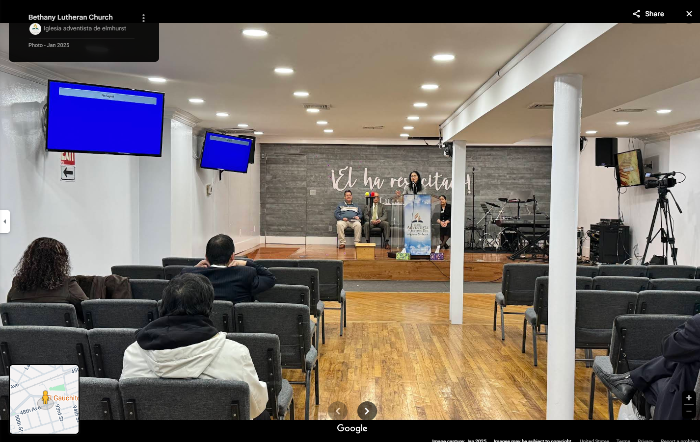
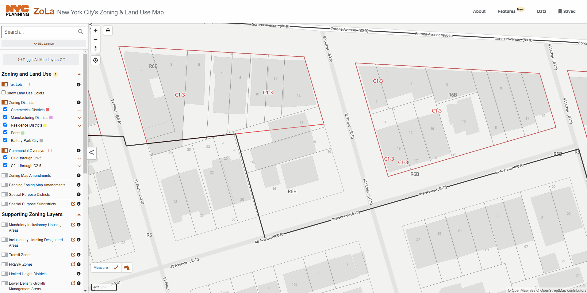

This page outlines the mechanical and structural reasons for ongoing vibration issues occurring within my living space, caused by faulty construction work and improper installations by the neighboring church.
Overview of the Structure
The neighboring church extended their first floor several years ago, adding a building extension roughly 20-30 feet long. On the roof of this extension, they installed a large central HVAC unit.
The HVAC system rests atop two large steel beams, which span across the extension from wall to wall. These beams, although on their roof, are also directly seated onto the shared structural walls which run along the middle of our homes from the back of the house to the front— meaning vibrations from the HVAC system are transmitted directly into our common walls.
Steel beam layout supporting HVAC unit:
Vibration Transmission Mechanism
When the HVAC system operates (particularly during cooling cycles), it generates significant low-frequency mechanical vibrations. These vibrations travel from the unit → into the steel beams → and into the shared masonry wall.
Once inside the shared wall, the vibrations propagate throughout the structure, eventually dissipating into adjacent floors and walls — particularly into my living space, located toward the front of the house where vibration energy accumulates and dissipates.
Faulty Soundproofing Installation
In May 2024, after being issued multiple noise violations,the church installed a soundproofing wall along the shared structure without any permits or consultation with a soundproofing engineer. This wall was intended to reduce airborne noise transmission from musical sessions.
However, the addition of layered materials without isolating the structure properly instead trapped low-frequency energy inside the wall assembly. With no proper decoupling or vibration isolation, the structure now acts like a resonator — worsening vibration transmission into my home.
Air Gaps and Unequal Soundproofing
Another critical flaw is that the church side of the wall is soundproofed, while my side, constructed for residential use, is untreated and contains multiple air gaps. These gaps allow both airborne and vibrational energy to leak into my space without any resistance.
The imbalance between the treated and untreated sides causes energy to reflect, concentrate, and break through weak points — amplifying the presence of low-frequency noise and structural resonance inside my apartment.
Lack of Professional Environmental Sound Study
At no time before, during, or after the soundproofing installation did the church perform a professional environmental sound or vibration impact study on my side of the property.
Without a formal assessment, they failed to detect how these construction changes would affect neighboring structures — leading to avoidable, ongoing defects that continue to worsen over time. The issue now occurs with ALL sounds in the house along the faulty soundproofed wall, including with any machinery that we might have in our own basement, as well as theirs.
Resulting Effects
The persistent structural vibrations have made my living environment unsafe and uninhabitable, contributing directly to significant disturbances and physical harm, as documented.
Visual References
Overview of building extension and HVAC placement:
Top view showing the shared wall with ours being the blue wall(no soundproofing materials installed) and theirs being the red(soundproofing material installed). The positioning of the hvac unit on the roof of their extension is showned in the yellow circle
 Front views showing the attached 3 family houses and the front entrance for the main/first floor of the church with the double white doors on the right, and the white door on the left which leads up to their second floor and third floor apartments.
The windows to my bedroom shown here in the blue rectangle at the front of the house
An image of inside the church and their converted apartment into an event space with concert stage and instrumentals. On the other side of the wall on the right side of the picture, is my mother's bedroom, with mine also alongside the same wall, except closer to the front entrance as shown in the top view image above as well. The capacity is for the church's event space is 75-100 people.
ZOLA Zoning Map. Their property, Lot #14, sits entirely in a R6-B Residential zone. While our property(Lot #13) sits halfway on the C1-3 Commercial zone border.
